From the View menu you can modify the camera and center of rotation for the 3D view. You can also toggle the visibility of the toolbars and various views and inspectors.
The entries on the Camera submenu are exactly the same as those on the Camera toolbar.
| Toggle the visibility of the center of rotation axes. This is also available from the toolbar using the button shown on the left. |
| Set the center of rotation axes to be at the center of the axis-aligned bounding box for the data set selected in the Pipeline Browser. This is also available on the toolbar using the button shown to the left. |
| Once you have selected Pick Center, you may click anywhere in the selected 3D view (highlighted in red) to choose a new center of rotation. If you click on a data set, the center of rotation will be set to the position on the surface of that dataset directly under the position of the mouse cursor. This option is also available on the toolbar using the button shown to the left. |
This menu entry has the same behavior as the Color Legend toolbar button in the Active Variable toolbar.
Selecting an item in the Toolbars submenu toggles the visibility of the corresponding toolbar at the top of the ParaView user interface. The following toolbars are available.
The Active Variable Controls toolbar allows you to make modifications related to the active variable in a 3D view.
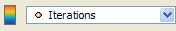
| 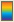 | Toggle the visibility of the color legend for the active variable in the selected 3D view. |
| 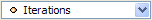 | Select the active variable in the selected 3D view. This variable is used for coloring the dataset. |
The buttons in the Camera Controls toolbar controls the user's point of view in a 3D view.
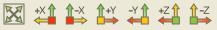
| Set the viewing position so that all visible datasets in the selected 3D view are within the viewing frustum. The viewing direction is not changed. Some datasets (or portions of them) may not be visible if they are obscured by another dataset closer to the viewing position. | |
 | Set the viewing position to view the data along the +X axis. |
 | Set the viewing position to view the data along the -X axis. |
 | Set the viewing position to view the data along the +Y axis. |
 | Set the viewing position to view the data along the -Y axis. |
 | Set the viewing position to view the data along the +Z axis. |
 | Set the viewing position to view the data along the -Z axis. |
The most commonly-used filters are available in the Common Filters toolbar. Selecting a filter from the toolbar has the same effect as selecting it from the Filters menu. Not all filters may be applied to every dataset (the output of a reader, source, or filter); the buttons for those that are not applicable will be grayed out when a particular reader, source, or filter is selected.
| 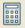 | Apply the Calculator filter. |
| 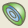 | Apply the Contour (or Isosurface) filter. |
| 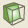 | Apply the Clip filter. |
| 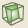 | Apply the Slice filter. |
| 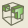 | Apply the Threshold filter. |
| 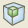 | Apply the Extract Subset filter. |
| 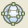 | Apply the Glyph filter. |
| Apply the Stream Tracer filter. | |
| 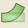 | Apply the Warp (vector) filter. |
| Apply the Group Datasets filter. | |
| 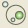 | Apply the Extract Group filter. |
Use the controls in this toolbar to specify the current time in this ParaView session.
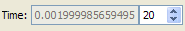
| 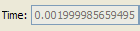 | Enter a time value to jump to a particular point in an animation |
| 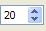 | Use this spin box to select a time step from a dataset with time information. |
The controls in this toolbar allow you to perform some of the most basic tasks in the ParaView application.

| 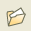 | Open a data file to load a dataset into ParaView. Please see the list of file formats ParaView can read. |
| 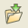 | Save the dataset selected in the Pipeline Browser to a file. Please see the list of file formats in which ParaView can save data. |
| 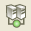 | Connect to an existing server or launch a server to which you wish to connect. See the Connect entry on the File menu page for more information. |
| 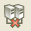 | Disconnect from a server to which you are currently connected. See the Disconnect entry on the File menu page for more information. |
| Display this Help browser. |
The Representation toolbar contains only one item: the Representation menu. It is used for selecting the representation of the dataset selected in the Pipeline Browser.
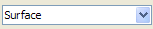
The following options are available from the Representation menu: Points, Wireframe, Surface, Outline, Volume (only for uniform rectilinear and unstructured datasets), and Surface with Edges. These are the same options available from the Display panel. See the Style section of the Display panel page for more information.
The item chosen in the Selection toolbar determines what happens when you click and drag the mouse in a 3D view. Items chosen in the selection modes (i.e., not Interaction) will be listed in the Selection Inspector. In any of the selection modes, left-clicking and dragging draws out a rectangle on the screen in which the selection happens. Selection only occurs on one dataset at a time.
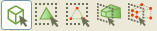
| Left-click and drag to rotate the dataset. Middle-click and drag to pan. Right-click and drag to zoom (down to zoom in, up to zoom out). | |
| 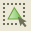 | The cells/elements lying within the selection rectangle on the surface of the dataset are selected. |
| 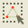 | The points/nodes lying within the selection rectangle on the surface of the dataset are selected. |
| 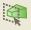 | The cells/elements lying within the selection rectangle all the way through the dataset are selected. |
| 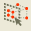 | The points/nodes lying within the selection rectangle all the way through the dataset are selected. |
The buttons in the Undo/Redo toolbar allow you undo and redo actions you have performed in ParaView not related to moving the camera. Go here for undo/redo information as it applies to the camera.
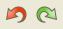
| 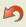 | Undo the last action performed in ParaView. |
| 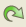 | Redo the last undone action in ParaView. |
The VCR controls allow you to move through an animation that has already been created. Please see the Animation Toolbar section of the Animation page for a description of the various buttons.
See the Animation page.
See the Animatin View section of the Animation page.
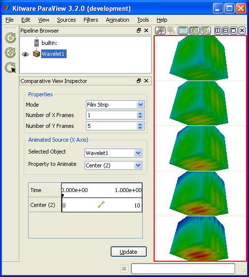
See the Object Inspector page.
See the Pipeline Browser page.
Selecting this entry toggles the visibility of the Statistics View. This view lists basic statistical information for each instance of a reader, source, or filter used in the current ParaView session, including its name several pieces of information about its output (i.e., the dataset type, the number of cells and points, the amount of memory it consumes, and its spatial bounds).